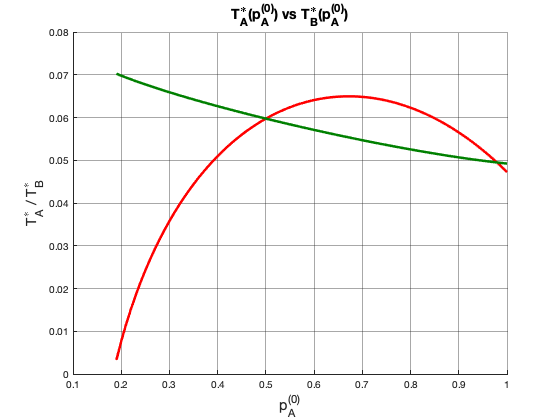
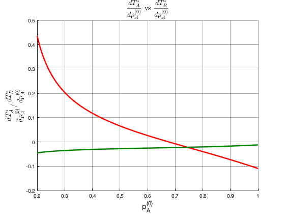
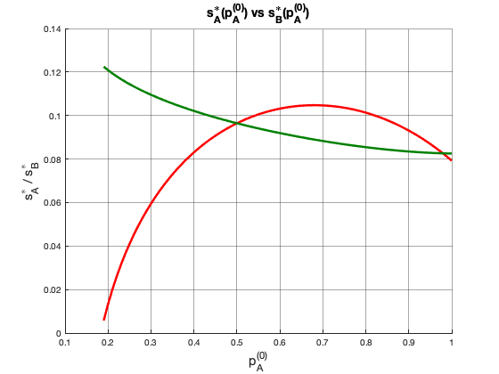
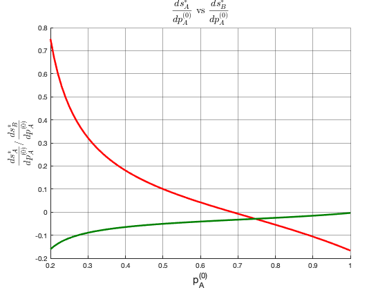
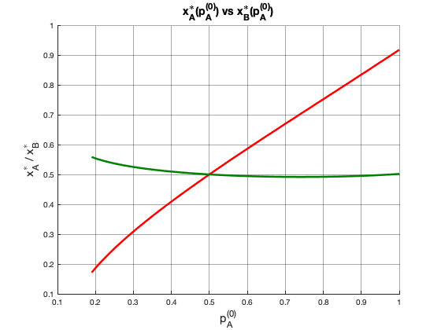
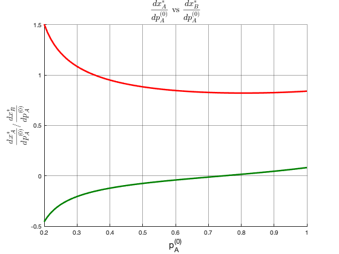
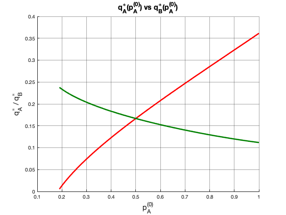
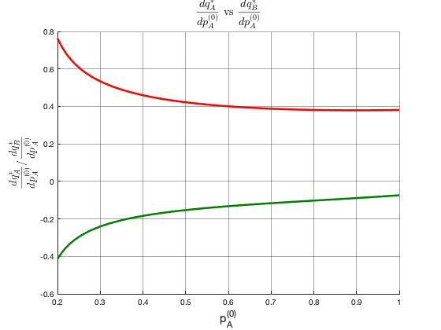
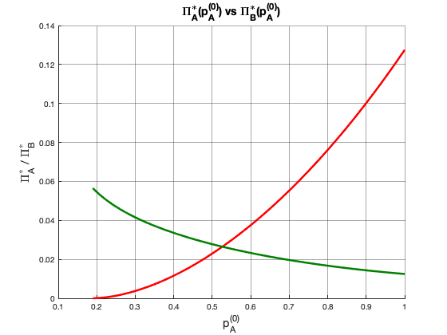
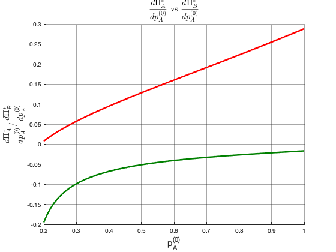

clc
clear
MinimumDigitsAccuracy = 7;
ExperimentFolder = 'experiments';
PREFIX = 'Varying_PA_BETA_NEG_0';
FileName = sprintf('%s.mat',PREFIX);
CombinedFileName = fullfile(ExperimentFolder,FileName);
load(CombinedFileName);
idx = find(Experiment.Topts(:,1)~=-1);
t = Experiment.Parameters{Experiment.ParamIndex};
ParamName = Experiment.ParamsNames{Experiment.ParamIndex};
t = t(idx)';
LA = Experiment.Parameters{1};
if(length(LA)>1)
LA = LA(idx)';
end
LB = Experiment.Parameters{2};
if(length(LB)>1)
LB = LB(idx)';
end
mu = Experiment.Parameters{5};
if(length(mu)>1)
mu = mu(idx)';
end
kappa = Experiment.Parameters{6};
if(length(kappa)>1)
kappa = kappa(idx)';
end
alpha = (kappa .* mu - 2) ./ (mu.^2 - 4);
beta = (2*kappa - mu) ./ (mu.^2 - 4);
TA = Experiment.Topts(idx,1);
TB = Experiment.Topts(idx,2);
So = LA .* LB + LB .* TA + LA .* TB;
dTA = diff(TA);
dTB = diff(TB);
dt = diff(t);
dTAdt = dTA ./ dt;
dTBdt = dTB ./ dt;
ExtraParams.LA = LA;
ExtraParams.LB = LB;
ExtraParams.alpha = alpha;
ExtraParams.beta = beta;
ExtraParams.So = So;
ExtraParams.dTAdt = dTAdt;
ExtraParams.dTBdt = dTBdt;
VariableIndex = 1;
PlotCurves(VariableIndex,Experiment.ParamIndex,TA,TB,t,MinimumDigitsAccuracy);
SA = Experiment.Sopts(idx,1);
SB = Experiment.Sopts(idx,3);
dSA = diff(SA);
dSB = diff(SB);
dt = diff(t);
dSAdt = dSA ./ dt;
dSBdt = dSB ./ dt;
VariableIndex = 2;
PlotCurves(VariableIndex,Experiment.ParamIndex,SA,SB,t,MinimumDigitsAccuracy);
XA = Experiment.Xopts(idx,1);
XB = Experiment.Xopts(idx,2);
dXA = diff(XA);
dXB = diff(XB);
dt = diff(t);
dXAdt = dXA ./ dt;
dXBdt = dXB ./ dt;
VariableIndex = 3;
PlotCurves(VariableIndex,Experiment.ParamIndex,XA,XB,t,MinimumDigitsAccuracy);
QA = Experiment.Qopts(idx,1);
QB = Experiment.Qopts(idx,2);
dQA = diff(QA);
dQB = diff(QB);
dt = diff(t);
dQAdt = dQA ./ dt;
dQBdt = dQB ./ dt;
VariableIndex = 5;
PlotCurves(VariableIndex,Experiment.ParamIndex,QA,QB,t,MinimumDigitsAccuracy);
FA = Experiment.Fopts(idx,1);
FB = Experiment.Fopts(idx,4);
VariableIndex = 6;
PlotCurves(VariableIndex,Experiment.ParamIndex,FA,FB,t,MinimumDigitsAccuracy);
function [color_a,color_b] = PlotColors(VA,VB,MinimumDigitsAccuracy)
RedColor = [(255/255),(0/255),(0/255)];
GreenColor = [(0/255),(128/255),(0/255)];
BlueColor = [(0/255),(0/255),(255/255)];
dV = abs(VA-VB);
dV = (1/length(dV)) * sum(dV);
if(dV < 10^(-MinimumDigitsAccuracy))
color_a = BlueColor;
color_b = BlueColor;
else
color_a = RedColor;
color_b = GreenColor;
end
end
function PlotCurves(VariableIndex,ParamIndex,VA,VB,t,MinimumDigitsAccuracy)
VariablesNames = {'T^{\ast}','s^{\ast}','x^{\ast}','p^{\ast}',...
'q^{\ast}','\Pi^{\ast}','R^{\ast}','C^{\ast}'};
ParamsNames = {'\lambda_A','\lambda_B','p_A^{(0)}','p_B^{(0)}',...
'\mu','\kappa','c','\gamma'};
FigureNameStrings = {'Optimal Investment Levels',...
'Optimal Limiting Influences',...
'Optimal Limiting Beliefs',...
'Optimal Prices',...
'Optimal Quantities',...
'Optimal Profits',...
'Optimal Revenues','Optimal Costs'};
DerivativeFigureNameStrings = {'Optimal Investment Levels Derivatives',...
'Optimal Limiting Influences Derivatives',...
'Optimal Limiting Beliefs Derivatives',...
'Optimal Prices Derivatives',...
'Optimal Quantities Derivatives',...
'Optimal Profits Derivatives',...
'Optimal Revenues Derivatives',...
'Optimal Costs Derivatives'};
VariableName = VariablesNames{VariableIndex};
ParamName = ParamsNames{ParamIndex};
FigureName = FigureNameStrings{VariableIndex};
FigureTitle = sprintf('%s_A(%s) vs %s_B(%s)',VariableName,ParamName,VariableName,ParamName);
XLabel = ParamName;
YLabel = sprintf('%s_A / %s_B',VariableName,VariableName);
[color_a,color_b] = PlotColors(VA,VB,MinimumDigitsAccuracy);
figure('Name',FigureName);
title(FigureTitle,'fontsize',14);
xlabel(XLabel,'fontsize',14);
ylabel(YLabel,'fontsize',14);
hold on
plot_a = plot(t,VA,'-','LineWidth',2.5);
plot_b = plot(t,VB,'-','LineWidth',2.5);
set(plot_a,'Color',color_a);
set(plot_b,'Color',color_b);
axes = gca;
axes.LineWidth = 1.0;
axes.GridAlpha = 0.4;
grid on
hold off
dVA = diff(VA);
dVB = diff(VB);
dt = diff(t);
dVAdt = dVA ./ dt;
dVBdt = dVB ./ dt;
FigureName = DerivativeFigureNameStrings{VariableIndex};
FigureTitle = sprintf('$$\\frac{d%s_A}{d%s}~\\textrm{vs}~\\frac{d%s_B}{d%s}$$',...
VariableName,ParamName,VariableName,ParamName);
XLabel = ParamName;
YLabel = sprintf('$$\\frac{d%s_A}{d%s} / \\frac{d%s_B}{d%s}$$',...
VariableName,ParamName,VariableName,ParamName);
[color_a,color_b] = PlotColors(dVAdt,dVBdt,MinimumDigitsAccuracy);
figure('Name',FigureName);
title(FigureTitle,'fontsize',14,'Interpreter','latex');
xlabel(XLabel,'fontsize',14);
ylabel(YLabel,'fontsize',14,'Interpreter','latex');
hold on
plot_a = plot(t(2:end),dVAdt,'-','LineWidth',2.5);
plot_b = plot(t(2:end),dVBdt,'-','LineWidth',2.5);
set(plot_a,'Color',color_a);
set(plot_b,'Color',color_b);
axes = gca;
axes.LineWidth = 1.0;
axes.GridAlpha = 0.4;
grid on
hold off
end
function PlotEstimatedDerivatives(VariableIndex,ParamIndex,VA,VB,t,ExtraParams,MinimumDigitsAccuracy)
LA = ExtraParams.LA;
LB = ExtraParams.LB;
alpha = ExtraParams.alpha;
beta = ExtraParams.beta;
So = ExtraParams.So;
dTAdt = ExtraParams.dTAdt;
dTBdt = ExtraParams.dTBdt;
VariablesNames = {'T^{\ast}','s^{\ast}','x^{\ast}','p^{\ast}',...
'q^{\ast}','\Pi^{\ast}','R^{\ast}','C^{\ast}'};
ParamsNames = {'\lambda_A','\lambda_B','p_A^{(0)}','p_B^{(0)}',...
'\mu','\kappa','c','\gamma'};
EstimatedDerivativeFigureNameStrings = {'Optimal Investment Levels Estimated Derivatives',...
'Optimal Limiting Influences Estimated Derivatives',...
'Optimal Limiting Beliefs Estimated Derivatives',...
'Optimal Prices Estimated Derivatives',...
'Optimal Quantities Estimated Derivatives',...
'Optimal Profits Estimated Derivatives',...
'Optimal Revenues Estimated Derivatives',...
'Optimal Costs Estimated Derivatives'};
VariableName = VariablesNames{VariableIndex};
ParamName = ParamsNames{ParamIndex};
switch VariableIndex
case 2
theta_SA_theta_TA = (LB ./ So) .* (1 - VA);
theta_SA_theta_TB = -(LA ./ So) .* VA;
theta_SB_theta_TB = (LA ./ So) .* (1 - VB);
theta_SB_theta_TA = -(LB ./ So) .* VB;
dSAdt = theta_SA_theta_TA(2:end) .* dTAdt + theta_SA_theta_TB(2:end) .* dTBdt;
dSBdt = theta_SB_theta_TA(2:end) .* dTAdt + theta_SB_theta_TB(2:end) .* dTBdt;
FigureName = EstimatedDerivativeFigureNameStrings{VariableIndex};
FigureTitle = sprintf('$$\\frac{d%s_A}{d%s}~\\textrm{vs}~\\frac{d%s_B}{d%s}$$',...
VariableName,ParamName,VariableName,ParamName);
XLabel = ParamName;
YLabel = sprintf('$$\\frac{d%s_A}{d%s} / \\frac{d%s_B}{d%s}$$',...
VariableName,ParamName,VariableName,ParamName);
[color_a,color_b] = PlotColors(dSAdt,dSBdt,MinimumDigitsAccuracy);
figure('Name',FigureName);
title(FigureTitle,'fontsize',14,'Interpreter','latex');
xlabel(XLabel,'fontsize',14);
ylabel(YLabel,'fontsize',14,'Interpreter','latex');
hold on
plot_a = plot(t(1:end-1),dSAdt,'-','LineWidth',2.5);
plot_b = plot(t(1:end-1),dSBdt,'-','LineWidth',2.5);
set(plot_a,'Color',color_a);
set(plot_b,'Color',color_b);
axes = gca;
axes.LineWidth = 1.0;
axes.GridAlpha = 0.4;
grid on
hold off
case 3
theta_XA_theta_TA = (LB ./ So) .* (1 - VA);
theta_XA_theta_TB = -(LA ./ So) .* VA;
theta_XB_theta_TB = (LA ./ So) .* (1 - VB);
theta_XB_theta_TA = -(LB ./ So) .* VB;
dXAdt = theta_XA_theta_TA(2:end) .* dTAdt + theta_XA_theta_TB(2:end) .* dTBdt;
dXBdt = theta_XB_theta_TA(2:end) .* dTAdt + theta_XB_theta_TB(2:end) .* dTBdt;
FigureName = EstimatedDerivativeFigureNameStrings{VariableIndex};
FigureTitle = sprintf('$$\\frac{d%s_A}{d%s}~\\textrm{vs}~\\frac{d%s_B}{d%s}$$',...
VariableName,ParamName,VariableName,ParamName);
XLabel = ParamName;
YLabel = sprintf('$$\\frac{d%s_A}{d%s} / \\frac{d%s_B}{d%s}$$',...
VariableName,ParamName,VariableName,ParamName);
[color_a,color_b] = PlotColors(dXAdt,dXBdt,MinimumDigitsAccuracy);
figure('Name',FigureName);
title(FigureTitle,'fontsize',14,'Interpreter','latex');
xlabel(XLabel,'fontsize',14);
ylabel(YLabel,'fontsize',14,'Interpreter','latex');
hold on
plot_a = plot(t(1:end-1),dXAdt,'-','LineWidth',2.5);
plot_b = plot(t(1:end-1),dXBdt,'-','LineWidth',2.5);
set(plot_a,'Color',color_a);
set(plot_b,'Color',color_b);
axes = gca;
axes.LineWidth = 1.0;
axes.GridAlpha = 0.4;
grid on
hold off
end
end
         